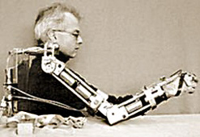

1963

Forscher am Los Amigos Spital in Downey, Kalifornien, entwickelten den ersten Computer gesteuerten Roboter-Arm. Der "Rancho-Arm" wurde als Werkzeug für Behinderte eingesetzt. Sechs Gelenke verliehen ihm die Flexibilität eines menschlichen Arms.